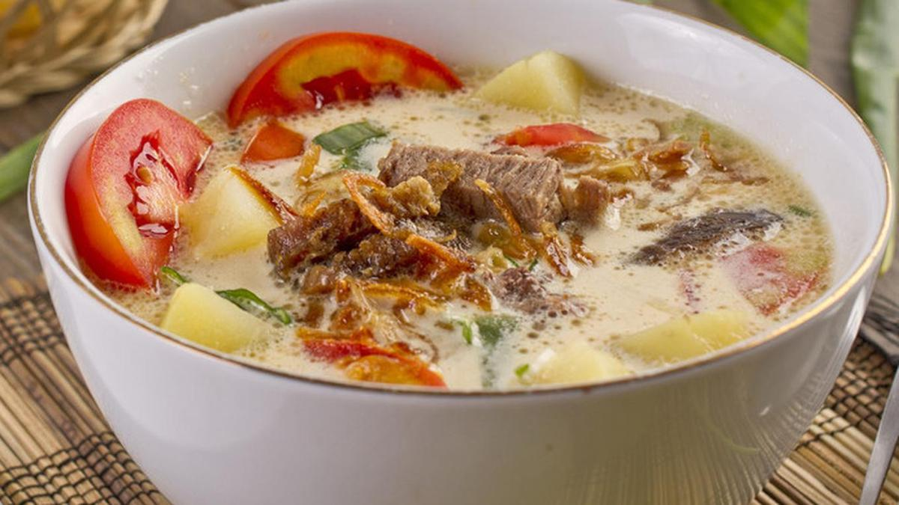
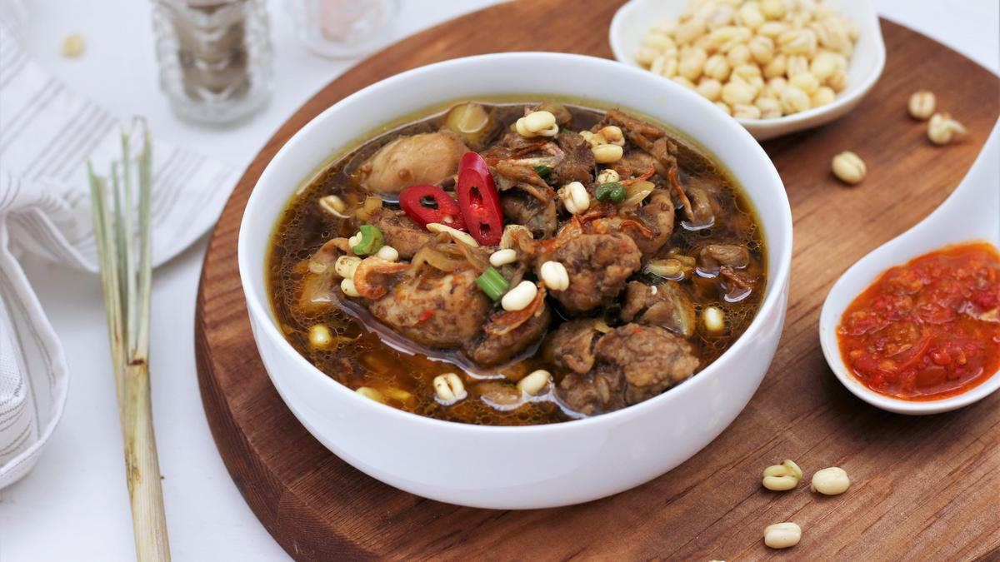

Makanan Populer

Rendang
Rendang adalah makanan tradisional yang berasal dari Sumatera Barat dan terbuat dari daging.
Pempek
Pempek adalah makanan tradisional yang berasal dari Sumatera Selatan yang biasanya terbuat dari ikan.

Soto Betawi
Soto Betawi adalah soto khas Betawi yang terdiri dari campuran daging jerohan sapi dan kuah santan.

Bika Ambon
Bika Ambon merupakan makanan khas jenis kue basah yang berasal dari Medan, Sumatera Utara.

Rawon
Rawon adalah sup daging berkuah hitam dan berasal dari Ponorogo, Jawa Timur.

Bolu Kemojo
Bolu Kemojo merupakan makanan khas Riau berbentuk bunga berwarna hijau dan beraroma pandan.